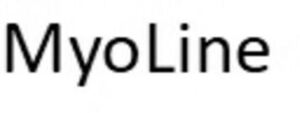

Trade Mark Journal No.2026/003 16 January 2026
WO0000001893079 (35,39,40,41,42)
Office of origin: France
Date of International Registration:5 September 2025
Date of designation in the UK:
5 September 2025

International priority date claimed: 23 July 2025
(France)
(5166699)
- Class 35
- Compilation of information into computer databases; data systematization in computer databases; compilation of information in computer databases; computer file management.
- Class 39
- Collection, storage and delivery of medical samples and in particular patient tissue samples.
- Class 40
- Cryogenic preservation services for medical samples, in particular patient tissue samples for scientific and medical research.
- Class 41
- Education; training; sporting and cultural activities; information relating to entertainment or education; publication of books; organization of competitions (education or entertainment); organization of exhibitions for cultural or educational purposes; organization and conducting of training workshops, colloquiums, conferences, congresses, seminars, symposiums for cultural or educational purposes; drafting and publication of texts other than advertising texts; publication of results of clinical trials conducted on patients, pharmaceutical preparations; educational services online via computer databases, the Internet or extranets.
- Class 42
- Evaluations, assessments and research in the fields of science and technology provided by engineers; evaluations and estimates in the field of myology research; medical research in the field of myology; academic and industrial analysis and research services in the field of muscle health and muscle damage prevention; stem cell research; scientific research conducted using databases; design and development of software for database management; installation and maintenance of database software; provision of information and results with respect to scientific research from an online searchable database; research and development of new products (for others); technical project studies; development (design), installation, maintenance, updating or rental of software; computer programming; conversion of computer programs and data (other than physical conversion); recovery of computer data; quality control; surveying (engineering work); conversion of documents from a physical medium to an electronic medium; scientific research in the field of myology for medical purposes; clinical trials; medical research laboratory services; biological research, research in bacteriology, in gene and cell therapy, in chemistry and genetics in the field of myology; research and development of pharmaceutical, veterinary and sanitary products for third parties; laboratory services, namely sorting and selection of molecules; development and validation of biological tests, cell tests, genetic tests and immunological tests; basic and applied research; technical research; laboratory research and analyses, namely, functional genomics activities for identifying, characterizing, validating or developing biologically active molecules; professional consultancy unrelated to business operations in the field of scientific research and therapies; scientific and medical research services, namely tests, trials, analyses of medical samples, and in particular human tissue and stem cell samples.
ASSOCIATION FRANCAISE CONTRE LES MYOPATHIES
Representative: Madame BACOU Clémence IPSILON, 12 Avenue d'Italie, F-75013 PARIS, FRANCE